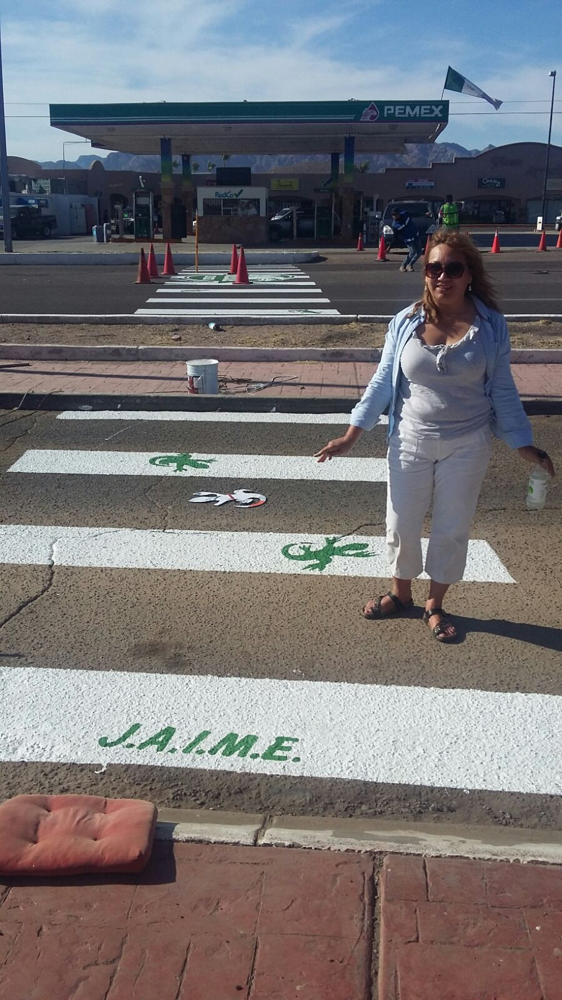
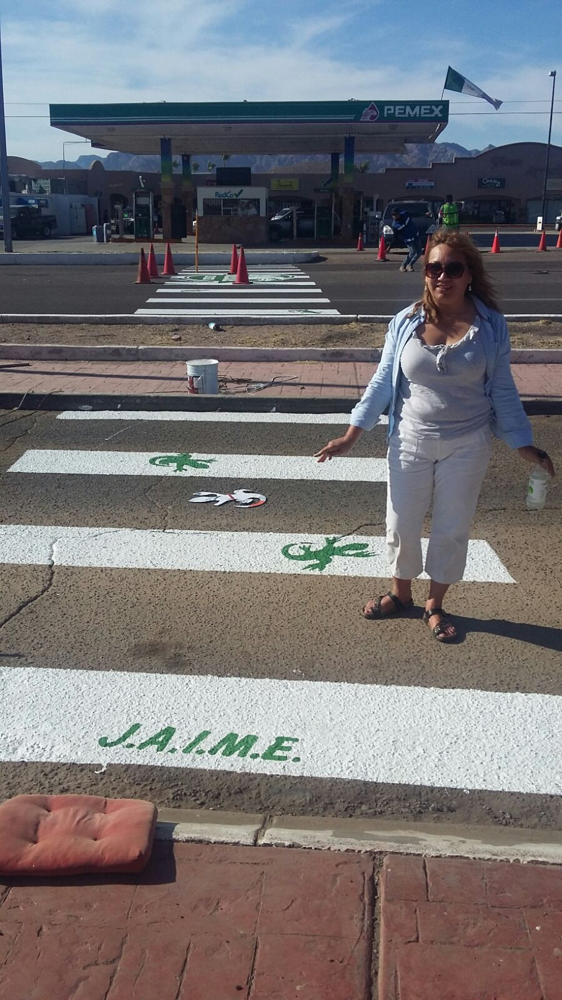

JAIME
Es una asociación civil no gubernamental y sin ánimo de lucro, que nace de la promesa de una Madre hacia su hijo, quien fuera asesinado por un conductor ebrio. El joven Jaime Francisco Orozco Alcaraz, muere a la edad de 14 años y en honor a él, surge la asociación a la cual su madre la llama J.A.I.M.E. que por siglas significa: Jamás Apoyaré Ir Manejando Ebrio. J.A.I.M.E. Inicia en el Puerto de Guaymas, Sonora, México el 17 de diciembre de 2010. Mas allá de realizar campañas sobre la prevención de accidentes, ésta asociación ayuda a victimas y sobrevivientes de conductores ebrios y realiza campañas y conferencias sobre seguridad y educación vial.

 
